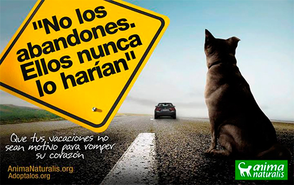
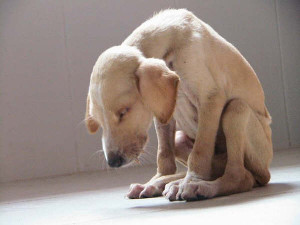

Segons la nova llei promulgada per la Generalitat de Catalunya, l'Ajuntament és el responsable dels animals abandonats que es trobin en el seu terme municipal. Per tant, si us trobeu un gat o un gos abandonat cal que aviseu als responsables de la gossera municipal. Ells s'han de fer càrrec de l'animal i portar-lo a les instal·lacions adequades. El telèfon de la Gossera Municipal de Tarragona és el 977 200 071 / 977 256 100.
Les persones que volen deixar el seu animal de companyia a les nostres instal·lacions cal que siguin conscients que hi ha moltes opcions abans d'arribar a aquest punt.
A vegades unes poques classes d'ensinistrament caní poden solucionar problemes de comportament de la nostra mascota, com ara quan ens mosseguen els mobles o bé quan no podem sortir a passejar tranquilament.
Altres cops cal tenir molt en compte l'esterilització de les femelles. Sempre existeix el risc que un mascle entri al pati de casa nostra mentre està en zel, o bé que se'ns escapi. Pot ser que tinguem la sort de trobar-la a ella... i a uns quants més a la panxa!
Quants cops han vingut persones a la Protectora amb quatre cadells que ens diuen "Jo ja em quedo la gossa i un cadell, però no puc amb tots els altres!" El remei cal posar-lo abans. També és important l'esterilització dels mascles que, a vegades, pot ser, a més a més, una solució al problema de l'agressivitat.
Durant l'estiu també és habitual l'abandonament d'animals a causa de les vacances. Cal saber que actualment cada cop són més les cases rurals i hotels que accepten mascotes en les seves intal·lacions. Si, per altra banda, no podem endur-nos la nostra mascota de viatge, existeixen residències que el poden cuidar fins a la nostra tornada.
Una altre dels problemes que no es té prou en compte és l'esterilització dels gats, tant mascles com femelles. Malauradament, cada cop tenim més gats a les nostres instal·lacions ja que no existeix en el nostre pais el costum d'esterilitzar-los. Cal tenir en compte que sense control per la nostra part la població de gats augmenta cada any degut, principalment, a la cria de les gates abandonades.
Si, tot i així, has de deixar la teva mascota en les nostres instal·lacions, caldrà que abonis una quantitat per tal que la puguem alimentar i atendre mínimament. Degut al nombre d'animals que tenim actualment en les nostres instal·lacions, només s'accepten els animals dels propietaris residents al municipi de Tarragona.
Pots fer un donatiu puntual a aquest número de compte:
IBAN: ES36 0081 0104 7900 0155 4158
Swift Entitat: BSABESBB
Gràcies!
 facebook
facebook (+34) 653 073 713
(+34) 653 073 713